01The idea
A common way to describe a region's trend is to test every pixel and report the share of pixels with a significant trend, or to average the pixels' slopes and test the mean as if the pixels were independent measurements. Both mislead, for two reasons.
- Thousands of tests. At a 5% level, about 5% of the pixels of a region with no trend at all come out significant.
- Neighbours move together. A drought or a wet year affects a whole landscape. Ten thousand correlated pixels carry far less information than ten thousand independent ones. A test that treats them as independent is far too confident.

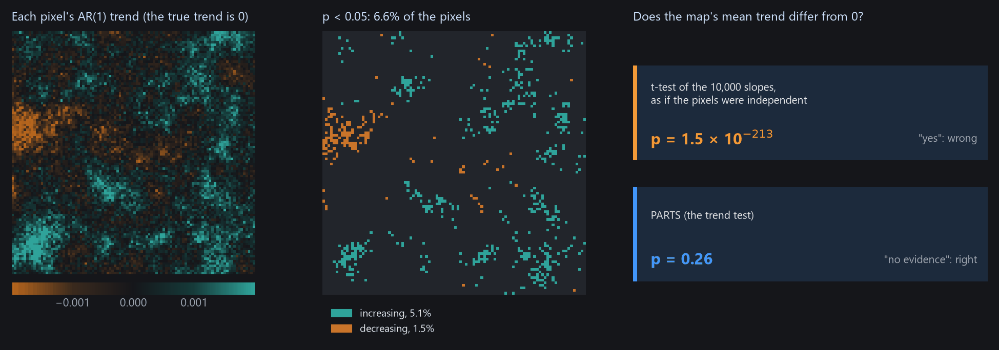
PARTS (Partitioned Autoregressive Time Series) answers the regional question with one test instead of thousands. It measures how strongly pixels are correlated at each distance and builds that into the test. Janus has it in two places:
| Where | Answers | Gives |
|---|---|---|
| Tools → AR(1) trend | Does this pixel's series have a trend, allowing for the persistence of its errors from year to year? | On the chart: the line and its test. On the image: maps of the slope, p, t, its standard error, ρ. |
| View → Analysis → Trend test | Does the mean trend of the ROI, the visible area or the image differ from 0? Of each class of a land-cover layer? Do the classes differ? | A table of estimates, standard errors, t and p, and the chi-square test of the classes. |
- Trend
- The slope of a straight line through a pixel's series, in index units per year.
- AR(1) ρ
- How much of one year's departure from the line carries over to the next year (0: none, close to 1: long runs above or below the line).
- Range
- The distance over which pixels' departures stay correlated: the correlation is 0.37 at one range and 0.05 at three.
- Nugget
- The share of a pixel's variation that is its own, shared with no neighbour (sensor noise, a field ploughed one year).
02The example
41 annual Landsat medoid composites of a vegetation index, 1985 to 2025, over the coast of Sergipe and Alagoas in north-eastern Brazil, around the lower São Francisco river (path/row 215/067). One GeoTIFF per year, named landsat_medoid_1985.tif and so on (Janus reads the years from the names), in EPSG:4326 at about 30 m, 7478 × 7319 pixels.
The files mark the sea and the area outside the scene with 0 but declare no nodata value. A pixel that is 0 is then a value, and the sea would enter the test. The guide opens a VRT of each year with 0 declared as no data instead (a few lines of GDAL, in tools/make_parts_guide.py). The zones used in section 08 come from the same script.
Fill values
Before testing trends, check that water, the sea and the outside of the scene are no data, not 0. A layer's Display panel shows its nodata value, and GDAL's gdalbuildvrt -srcnodata 0 or gdal_edit -a_nodata 0 sets one.
03One pixel: the AR(1) trend
Tools → AR(1) trend fits each series on the chart (the cursor, the pins and the ROI mean) with a straight line whose errors follow an AR(1) process, by REML, as remotePARTS's fitAR. The line is drawn on the chart and its test goes into the Statistics table.

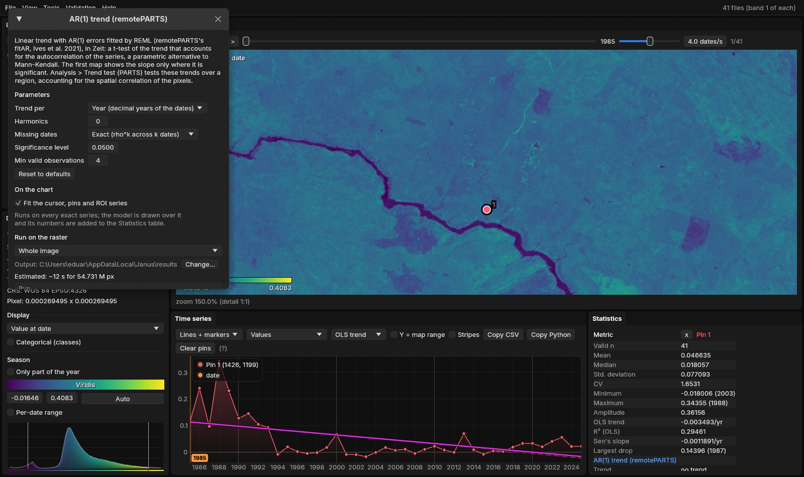

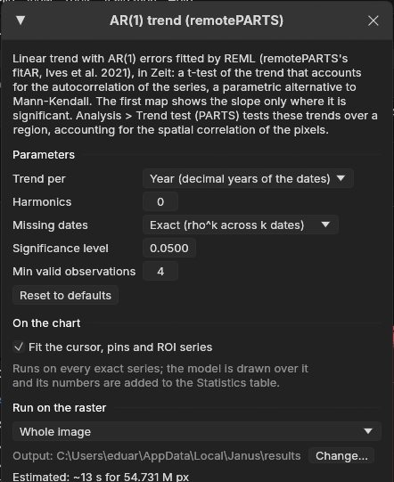

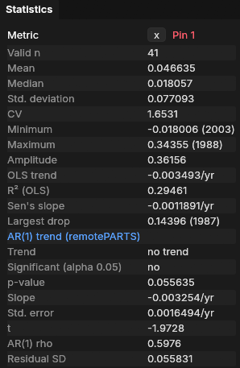
The ordinary least-squares line (OLS trend, −0.0035 per year) and the AR(1) line (−0.0033 per year) have nearly the same slope. The residuals of this pixel, however, come in long runs of years above or below the line: ρ = 0.60. Successive years that resemble each other carry less information than independent years. The AR(1) fit accounts for that, and its standard error (0.0016) is about twice what OLS assumes. The verdict is no trend (p = 0.056). Zeit, on the nearest pixel of a UTM grid, gives p = 0.00023 by OLS and 0.05 by AR(1).
| Parameter | Default | What it does |
|---|---|---|
| Trend per | Year | The slope per year (decimal years of the dates), or per time step (t = 1, 2, …, as remotePARTS). |
| Harmonics | 0 | Pairs of seasonal harmonics fitted with the line, for series with several dates a year (2 is typical for 16-day or monthly data). |
| Missing dates | Exact | Exact: two observations k dates apart are correlated by ρk, so a missing year counts. Ignore: the valid observations are taken as consecutive, as remotePARTS does. |
| Significance level | 0.05 | The level of the test, for the verdict and the map of the significant slope. |
| Min valid observations | 4 | Pixels with fewer valid observations are not fitted. |
04The map of trends
The same window runs on the image (Run on the raster): whole image, visible area or ROI. Over an ROI of 700 × 700 pixels (21 km across), the run took 2 seconds. The first map shows the slope where it is significant. The others are the slope, the p-value, t, the standard error, ρ, the intercept and the residual SD.

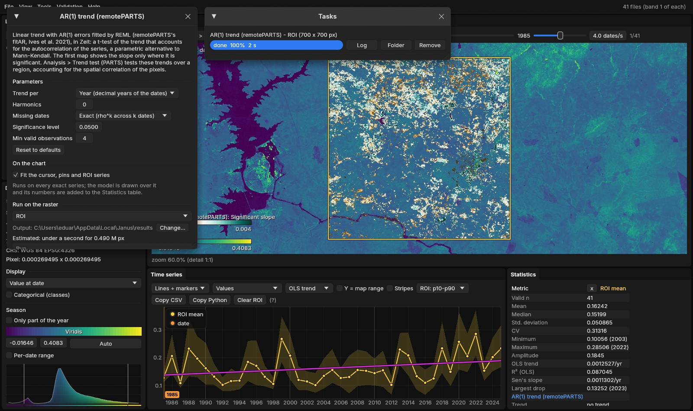
A quarter of the ROI is significantly greening, and the usual next sentence would be "the area is greening". The ROI mean series on the chart suggests caution: it rises by 0.0013 per year (OLS trend), but its year-to-year swings are much larger. Its own AR(1) test, in the Statistics table, does not support a trend:

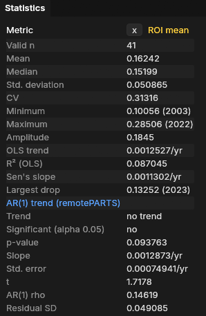
Testing the mean series is a fair check, but it only answers the question for one region, and it throws away information when the pixels' correlation is short compared with the region. The Trend test does better.
05The Trend test
View → Analysis, tab Trend test. Choose the Region (the ROI, the visible area or the whole image), leave Classes at None (the region's mean), and press Run the test. The test runs on a thread, with its progress and a Cancel button. Here it took 13 to 17 seconds on a 20-thread CPU.

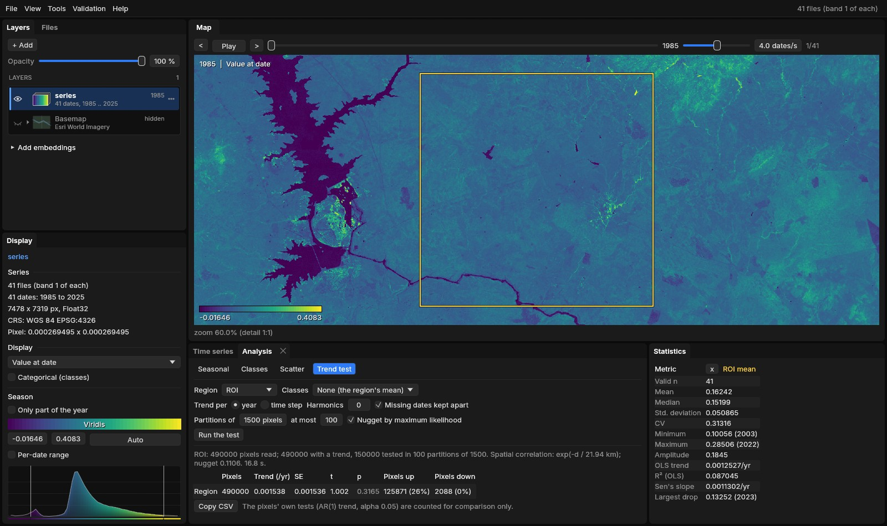

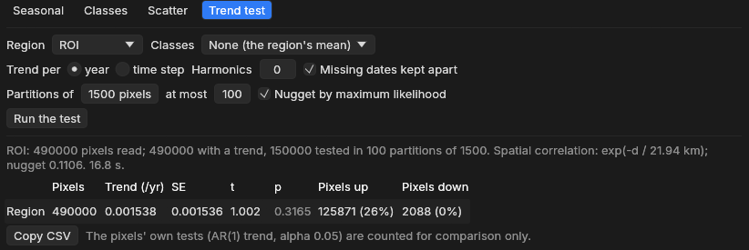
Line by line:
- 490,000 pixels read, 490,000 with a trend, 150,000 tested in 100 partitions of 1500. Every pixel of the ROI got its AR(1) trend. 100 random groups of 1500 pixels were tested (see section 06).
- exp(−d / 21.94 km), nugget 0.1106. Pixels' departures from their trends stay correlated over about 22 km, as wide as the ROI itself. Only 11% of a pixel's variation is its own.
- Region: 0.001538 /yr, SE 0.001536, t 1.002, p 0.3165. The mean trend is positive, but its standard error is as large as the estimate: no evidence of a regional trend.
- Pixels up 125,871 (26%), down 2,088 (0%). The pixels' own AR(1) tests, counted for comparison. They are not a regional test.
A quarter of the pixels significantly greening, and no regional trend, are not a contradiction. The whole ROI rises and falls together with wet and dry years, so its 490,000 pixels behave almost like a single pixel observed 41 times. Its mean rose over the period, but no more than such a strongly varying series often does by chance. The ROI mean's own test (p = 0.094) agrees.
Run again, the test gives exactly the same numbers: its random draws use a fixed seed.
06How it works
The Trend test takes four steps.
- Each pixel's trendThe AR(1) trend of every pixel read, as in section 03.
- The correlationThe residuals of 1000 sampled pixels, correlated pair by pair and fitted against distance.
- PartitionsThe pixels drawn into random groups; a regression of their trends that accounts for the correlation, in each.
- CombinedThe groups' estimates averaged; a standard error that accounts for the groups being correlated too.
- TestsA t-test of each mean against 0, and with classes, a chi-square test that they differ.
- CountsThe pixels' own significant trends, for comparison.
Step 2: correlation against distance
For each pair of the 1000 sampled pixels, Janus takes the correlation of their two residual series (observed minus the fitted line) and the distance between them. Through all those pairs (about half a million), it fits the curve exp(−d / range).

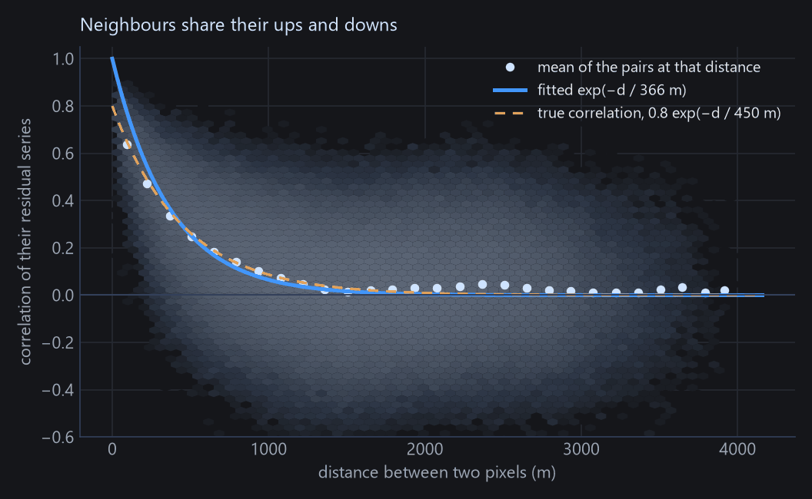
The curve does not include the nugget, which Janus estimates in step 3. As a result, a large nugget pulls the fitted range down: 366 m instead of 450 m here. Section 07 shows what that does to the p-values.
Real data rarely look this clean. In the ROI of this guide, the mean correlation drops to about 0.75 between close neighbours and then stays near 0.6 at every distance up to 28 km (Zeit's documentation plots it), because the whole area shares one interannual signal. An exponential curve fits that only roughly, which is why the fitted range (22 km) is as wide as the ROI.
Step 3: a regression in partitions
The right way to average correlated pixels is a generalised least squares regression (GLS). It gives less weight to pixels that repeat their neighbours' information. On 490,000 pixels, however, GLS would need a matrix of 490,000 × 490,000 numbers, about 2 TB. PARTS therefore draws the pixels into random partitions of 1500, fits a GLS in each (a matrix of 18 MB), and estimates each partition's nugget by maximum likelihood.

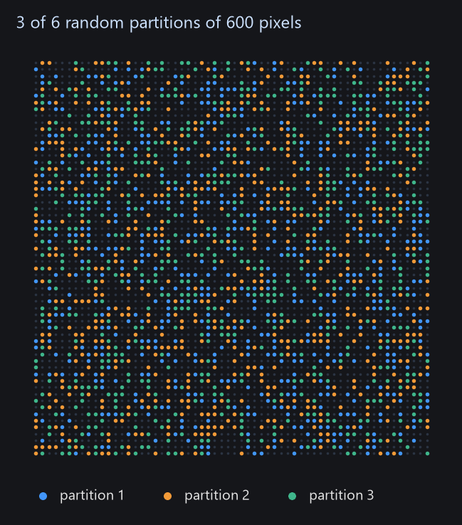
On the ROI of this guide, run in Zeit, the 100 partitions' estimates agreed closely (standard deviation 0.00015). Treated as 100 independent measurements, they would give a standard error of about 0.00002 and a p-value close to 0. PARTS gives 0.0017, because every partition carries the same correlated signal.
Step 4: combining the partitions
The partitions are not independent, since a pixel in one partition has neighbours in the others. PARTS computes, from the fitted correlation, how correlated the estimates of 6 partitions are (15 pairs), and combines all the partitions' standard errors with that correlation. When the partitions are almost fully correlated, as here, the combined standard error stays close to a single partition's, however many partitions are added. That is why 100 partitions are enough. With classes, the partitions' F statistics are combined into a chi-square test of whether the classes differ, again allowing for the correlation (Imhof's method).
07How far to trust it
A test is calibrated if it says p < 0.05 in 5% of the cases where there is nothing to find. To check this, tools/make_parts_guide.py simulated 300 maps with no trend, then 100 maps for each of several real trends, and ran both tests on each.

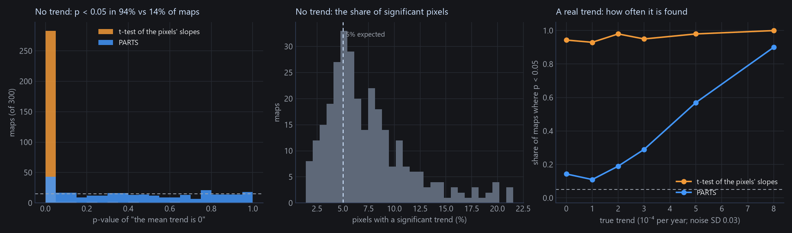
- PARTS removes most of the problem: 14% false alarms instead of 94%.
- It is not perfect. The range fitted in step 2 tends to be too short (365 m against the true 450 m, the median over these maps), so the p-values are somewhat too small: 6.3% of the maps gave p < 0.01. Treat p between 0.01 and 0.05 as weak evidence.
- The correlation model matters. When the correlation does not fall off like an exponential (smooth, Gaussian-like fields, or a regional signal that stays high at every distance, as in this example), the answer depends more on the settings. Try a second partition size: in Zeit, the same ROI gave p = 0.13 with partitions of 500 and 0.54 with 3000, the same conclusion either way.
08Classes
With a categorical layer open on the same grid (a land-cover map, zones), choose it under Classes. Each class gets its own mean trend, tested against 0, and a last line says whether the classes' trends differ. The layer's class names and colours come from its legend (Display → Categorical (classes)). Pixels outside every class are left out.
Here, the zones are the distance to the sea, made by tools/make_parts_guide.py data: coastal (under 40 km), transition (40 to 100 km) and interior (beyond 100 km), with water as no class. The region is the whole image.

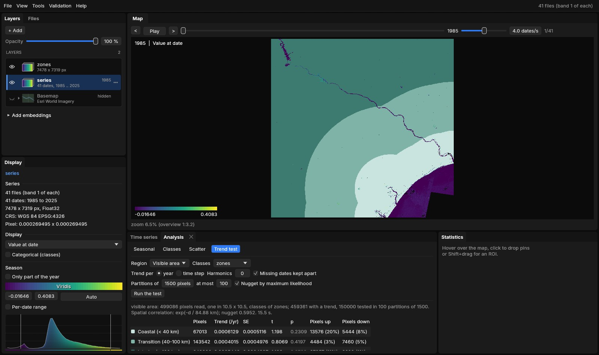

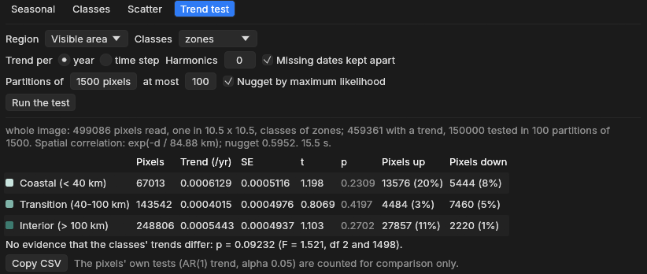
| Zone | Pixels | Trend (/yr) | SE | p | Pixels up / down |
|---|---|---|---|---|---|
| Coastal (< 40 km) | 67,013 | 0.0006129 | 0.0005116 | 0.2309 | 20% / 8% |
| Transition (40–100 km) | 143,542 | 0.0004015 | 0.0004976 | 0.4197 | 3% / 5% |
| Interior (> 100 km) | 248,806 | 0.0005443 | 0.0004937 | 0.2702 | 11% / 1% |
No zone's trend differs from 0, and the difference between the zones is not significant at 0.05 (p = 0.092, F = 1.52 with 2 and 1498 degrees of freedom).
The same question asked in Zeit, on the scene averaged to 300 m pixels instead of one 30 m pixel in 10.5 × 10.5, gave the same picture for each zone (p from 0.29 to 0.47) but p = 0.028 for the difference between zones. The two reads of the image differ (averaged pixels are smoother, so the nugget is lower: 0.32 against 0.60), and a p between 0.03 and 0.09 is borderline either way. Report such a result as weak evidence that the zones differ, and say how the image was read.
Differences can be easier to detect than trends
The regional signal (droughts, wet years) is shared by every class. It makes each class's mean uncertain, but it cancels when classes are compared. On real data, the chi-square test can be significant while no class differs from 0.
A class needs about 10 pixels per partition: classes with fewer than 10 × pixels / partition size pixels are left out and listed under the table. Merge small classes, or test a smaller region where they matter more.
09Reading and reporting
| Result | Means | Does not mean |
|---|---|---|
| Region: p < 0.05 | The region's mean trend differs from 0, in the direction of its sign. | That most pixels trend that way. |
| Region: p ≥ 0.05 | No evidence of a regional mean trend. | That nothing trends anywhere: local trends can be real and average out. |
| A class: p < 0.05 | That class's mean trend differs from 0. | That it differs from the other classes. |
| Classes differ: p < 0.05 | The classes' mean trends are not all the same. | Which ones differ: compare the estimates, or test two classes alone. |
| Pixels up 26% | 26% of the pixels' own tests have p < 0.05 and a positive slope. | That 26% of the area is changing, or that the region is. |
For a report, give the estimate with its standard error (or the interval estimate ± 1.96 SE), t and p, the region, and the settings. Copy CSV copies the table (class, pixels, trend_per_yr, se, t, p, significant_up, significant_down, and the chi-square p with classes). For example:
A sentence for the methods and results
Per-pixel trends of the annual index (1985–2025) were fitted by REML with AR(1) errors, and the regional mean trend was tested with PARTS (Ives et al. 2021) in Janus (exponential spatial correlation fitted to 1000 pixels, range 21.9 km; 100 random partitions of 1500 pixels; maximum-likelihood nugget). The mean trend of the area was +0.0015 ± 0.0015 yr−1 (t = 1.00, p = 0.32): not significantly different from 0, although 26% of the pixels had a significant positive trend individually.
Pitfalls
Fill values read as data (the sea as 0). Water, cities and bare ground mixed into a vegetation trend: mask them with the ROI, or make them classes of their own. Choosing the region, the partition size or the settings until p falls below 0.05. Reading the share of significant pixels as a regional result.
10Settings and limits
| Setting | Default | What it does |
|---|---|---|
| Region | ROI | The ROI (its polygon), the visible area, or the whole image. Without an ROI, the whole image. |
| Classes | None | A categorical layer on the same grid, at its current date: a mean per class, and the test that they differ. |
| Trend per | year | Per year of the dates, or per time step. |
| Harmonics | 0 | Seasonal harmonics fitted with each pixel's line (sub-annual series). |
| Missing dates kept apart | on | Observations k dates apart correlated by ρk; off, the valid ones are taken as consecutive (as remotePARTS). |
| Partitions of | 1500 pixels | The partition size (remotePARTS's authors use 1500 to 3000). Time grows as its cube, memory as its square: 36 MB per thread at 1500. |
| at most | 100 | The number of partitions. More add little once they are strongly correlated with each other. |
| Nugget by maximum likelihood | on | Each partition's own nugget; off, a nugget of 0 (every pixel's noise fully shared with its neighbours, which is rarely true). |
- Large regions are read at full resolution up to 500,000 pixels (and 40 million values), and beyond that one pixel in k × k (nearest), as the whole image above: one in 10.5 × 10.5.
- Distances are in km. A projected CRS is used as it is. A geographic CRS (longitude and latitude, as here) is projected equirectangularly at the region's mean latitude. Without a georeference, distances are in pixels.
- Fixed choices: 1000 pixels sampled to fit the correlation, an exponential correlation, 6 partitions crossed, seed 1, the pixels' own tests at 0.05, and pixels with at least the design's columns + 2 valid observations. Zeit exposes all of them in Python.
- The active layer is tested: a series of values with 4 dates or more.
Reproduce it
python tools/make_parts_guide.py data SERIES out writes the VRTs and the zones; python tools/make_parts_guide.py figures site/assets/img/trend-test the figures of the method. The screenshots come from janus out/series --interface modern with --roi 1000,500,1700,1200 --analysis trend,run, or --layer out/zones.tif --analysis trend,run,classes (see site/README.md).
11What next
- The method in depth, covariates, sensitivity checks and parity with remotePARTS: Regional Trends (PARTS) in Zeit's documentation, with
zeit.ar_trendandzeit.partsin Python. - A non-parametric pixel trend: Tools → Mann-Kendall, Sen's slope with the Hamed-Rao correction.
- When the land changed, not only whether it trends: LandTrendr and BFAST.
- Classes over time: View → Analysis → Classes.
12References
- Ives, A. R., Zhu, L., Wang, F., Zhu, J., Morrow, C. J., Radeloff, V. C. (2021). Statistical inference for trends in spatiotemporal data. Remote Sensing of Environment, 266, 112678. doi:10.1016/j.rse.2021.112678
- Morrow, C. J., Ives, A. R. remotePARTS: Spatiotemporal autoregression analyses for large data sets. R package, version 1.0.4. CRAN
- Imhof, J. P. (1961). Computing the distribution of quadratic forms in normal variables. Biometrika, 48(3/4), 419–426.
- Zeit: the library behind the tools of Janus, where
ar_trendandpartsimplement these methods.